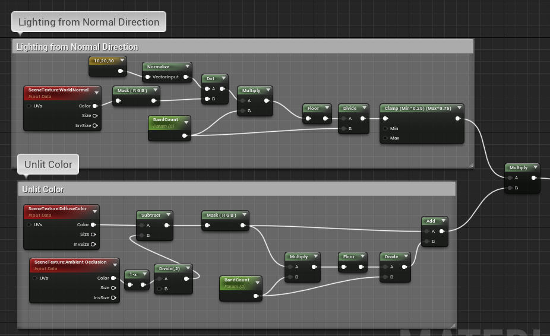

OS Wars
OS Wars is a hectic, splitscreen multiplayer, "satyrical" arena shooter. The game was designed top-down to look and sound reminiscent of a popular operating system from the 90's. It was the first game that I made by myself. I turned it in as the final project for a computer graphics class.
1 Level | Multiplayer | Menus | Save Files
Highlights
Menus and Player Profiles with persisting scores and stats
Custom Post-Processing Shader

Menus and Gamesaves
Players were able to create their own profiles, including their name,
and a few cosmetic and control options.
Player profiles and stats persist between play sessions. At the end of every round, players get to see their stats on the results screen.
Shader Programming
This was a game that needed to feel like it was running on vintage hardware.
I made a custom cel-shader that acheives a very high-contrast look by applying a staircase
function to the rgb elements of the base-color channel.
In order maintain the shape of the objects in the world, I multiplied the base color by
the world normals, with the same staircase function applied.
It was kind of hard to make out details on the character models, so I added outlines by darkening
pixels with neighbors that differed greatly in world normal or distance from camera.
Finally, to really bring out that disgusting "jpg on 90's hardware" look, I modified the ambient
occlusion, and fed it back into the base color before the staircase function.

|
|